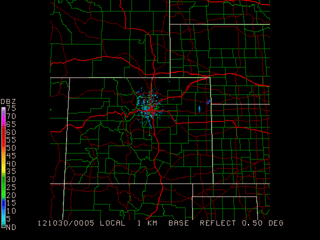

GEMPAK will "remember" the last map file used. If you forgot to reset
GEMPAK will "remember" the last map file used. If you forgot to reset $MAPFIL after some customization, the GEMPAK program will use the last definition you entered (on everything).
gpmap draws a map for a specified graphics area. Plots may be drawn in any GEMPAK projection and may be overlaid on images, similar as with sfmap, gpmap can display various types of graphics products including:
ATCF tracksImages are animated if more than one image file is specified in
SATFIL or RADFIL. Images are sampled to correspond to the
geographic area specified by GAREA.
MAP Map color/dash/width/filter flag MSCALE fgc;bgc;mask/units/lat;hide/values/anch/x;y/ln;wd/freq|text_info|t GAREA Graphics area PROJ Map projection/angles/margins|drop flag SATFIL Satellite image filename(s) RADFIL Radar image filename(s) IMCBAR Color/ornt/anch/x;y/ln;wd/freq LATLON Line color/dash/width/freq/inc/label/format PANEL Panel loc/color/dash/width/regn TITLE Title color/line/title TEXT Size/fnt/wdth/brdr/N-rot/just/hw flg CLEAR Clear screen flag DEVICE Device|name|x size;y size|color type LUTFIL Enhancement lookup table filename STNPLT Txtc/txt attr|marker attr|stnfil#col VGFILE Vgfile | scale file | attribute file | filter AFOSFL AFOS Graphics File AWPSFL AWIPS Graphics File LINE Color/type/width/label/smth/fltr/scflg WATCH End time|Wtch clrs|Wtch Tm;Status Ln Tm|Watch Num; WARN End time|TS;TN;FF clrs|Tm|Lb|Outline|Poly HRCN End time|colors|syms|Tm|Lb|Mt|Qw|F12|F24|F36|F48|F72|F96|F120|Name ISIG End time|colors|Sym|Tm|Id|Mv|Fl LTNG End time|time ints/colors|markers ATCF Time|colors|models|Tm|Id|Mv|Mkr|Name AIRM Airmet Plotting Attributes GAIRM GAirmet Plotting Attributes NCON NCON attributes CSIG End time|0_Hr;1_Hr;2_Hr;OL clrs|Seq0|Tm|Mv|Fl|Insty|Seq1|Seq2 SVRL End time|SVRL clrs|Tm|Lb|Outline|Clr BND Bnd name/color/fillsiz/fillpat/filt/minpts!lincol/linpat/linwid!mr TCMG End time|colors|center QSCT QuickScat Plotting Attributes WSTM End time|WN;WT;AD clrs|Tm|Lb|Outline/WN;WT;AD lwidth WOU End time|Mrkr and Otln clrs|Tm|Lb|Wt|Clr|Mrkr|Otln|Fill/Fill clrs| WCN End time|Mrkr and Otln clrs|Tm|Lb|Wt|Clr|Mrkr|Otln|Fill/Fill clrs| WCP End time|Wtch clrs|Tm|Lb|Clr ENCY Time|colors|models|Tm|Prs|Mkr|Ccd;wlevs|Fcst_Hour FFA End time|FF;FA clrs|Tm|Lb|Ic|Outline/FF;FA lwidth WSAT WindSAT Plotting Attributes ASCT AScat Plotting Attributes TRAK1 Jason-1 Ground Track Prediction Plotting Attributes TRAKE ENVISAT Ground Track Prediction Plotting Attributes TRAK2 Jason-2 Ground Track Prediction Plotting Attributes OSCT OScat Plotting Attributes SGWH Significant Wave Heights Plotting Attributes ASDI End time|Mode|DepArr|time increment/clrs or ht range/clrs|time lmt
Display the current NIDS Base Reflectivity image overlain with county boundaries and interstates
Begin by finding the latest NIDS file for KFTG (Front Range Airport, near Denver):
ls $GEMDATA/nexrad/NIDS/FTG/N0Q/ | tail -1
N0Q_20121030_0005
set RADFIL to this latest file available (full path name), set projection to use to radar file, set the graphics area to the entire set:
radfil = $GEMDATA/nexrad/NIDS/FTG/N0Q/N0Q_20121030_0005
proj = rad
garea = dset
map = 1
lutfil = default
imcbar = 1
After running gpmap to check that the reflectivity scan shows correctly, define the $mapfil variable to add roads and county boundaries, and define map to specify different colors for each map:
$mapfil = hicnus.nws + hiisus.nws + hiuhus.nws + hipowo.cia
map = 23 + 15/1/2 + 14/1/1 + 1/1/1
GEMPAK-GPMAP>r

You won't find this variable on any user interface, it is a hidden variable. Why? Good question.
$MAPFIL defaults to a medium-resolution political boundary map of the world (countries and states), caled HIPOWO.CIA. Alternate maps, such as lakes, rivers and more detailed political boundaries, can be called as well.
The mapfiles themselves are located in the directory $GEMMAPS. The higher the resolution of the map, the longer it takes to draw (best to use low-res for global maps).
You can specify multiple map files using the + character to separate each file name:
$MAPFIL = file1 + file2 + .... + fileN
The map files are named by concatenating the resolution, map boundaries, and area with the three-letter source file type. For example, the medium-resolution political world map from GSFC is called MEPOWO.GSF (ME = medium, PO = political boundaries, WO = world).
GEMPAK will "remember" the last map file used. If you forgot to reset
$MAPFILafter some customization, the GEMPAK program will use the last definition you entered (on everything).
We will explore mapfiles again in this tutorial, but for now, while still in gpmap, reset the mapfile to the default:
$mapfil = hipowo.cia
Using the latest visible satellite image, display the latest watches, warnings, international SIGMETs, lightning, ATCF tracks, airmets and non-convective and convective sigmets, SLS watches, winter storm messages, and all tropical disturbances.
Be sure that SATFIL is defined correctly!
MAP = 1/7
MSCALE = 0
GAREA = us
PROJ = sat
SATFIL = $SAT/EAST-CONUS/1km/VIS/VIS_20121029_2132
RADFIL =
IMCBAR =
LATLON =
PANEL = 0
TITLE = 1
TEXT = 1
CLEAR = y
DEVICE = xw
LUTFIL =
STNPLT =
VGFILE =
AFOSFL =
AWPSFL =
LINE =
WATCH = last
WARN = last
HRCN = all
ISIG = last
LTNG = last
ATCF = last
AIRM = last
GAIRM =
NCON = last
CSIG = last
SVRL = last
BND =
TCMG =
QSCT =
WSTM = last
WOU =
WCN =
WCP =
ENCY =
FFA =
WSAT =
ASCT =
TRAK1 =
TRAKE =
TRAK2 =
WATCH sets the ending time and the colors for plotting the watches.WARN sets the ending time and the colors for plotting warnings.WSTM sets the ending time and the colors for plotting winter storm warning, watch, and advisory.FFA sets the ending time and the colors for plotting flash flood and areal flood watches.CSIG sets the ending time and the colors for plotting convective sigmets.HRCN sets the ending time and the colors for plotting tropical depressions, storms, and hurricane positions. Optionally, a specific storm name may be entered to display only that specific tropical disturbance.ISIG sets the ending time and the colors for plotting international SIGMETs.LTNG sets the ending time, time increments, colors and markers for plotting lightning data.ATCF sets the time, models and colors for plotting ATCF (Automated Tropical Cyclone Forecast) tracks. As with HRCN, a specific storm name may be entered.AIRM sets the ending time and the colors for plotting airmets.NCON sets the ending time and the colors for plotting non-convective sigmets.SVRL sets the ending time and the colors for plotting severe local storms watches.WOU sets the ending time and the colors for plotting the watch outline update (WOU).WCN sets the ending time and the colors for plotting the watch county notification(WCN).WCP sets the ending time and the colors for plotting the watch corner product.ENCY sets the initial time, colors, model names, and date/time, pressure and marker flags for plotting of the ensemble cyclone tracks.